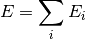

Background¶
PyFragment is a collection of Python modules that facilitate the setup and parallel execution of embedded-fragment calculations on molecular clusters, liquids, and solids.
Theory¶
The embedded-fragment methods are rooted in the many body expansion (MBE), which expresses the total energy of a molecular system as (under construction...)

# .. autofunction :: vbct.energy.energy